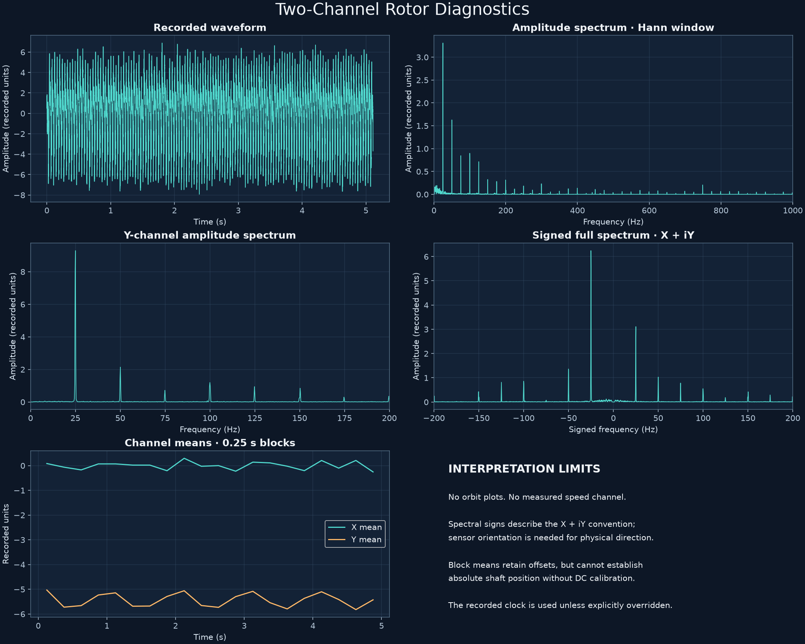

One recording, one project.
The input orbit_data.csv appears in FullSpectrum + SCP. SHA-256 comparison confirmed identical copies; these analyses are grouped in one project and the repository stores one canonical recording. The existing Orbit Analyzer remains separate and unchanged; this project adds only the non-orbit FullSpectrum and SCP work.
Input: orbit_data.csv
Identity:
afbee95a6f6797a0117707c3c798e1dc3dc133a30046905a12614ca38e3ec7eeTimestamps are finite and strictly increasing. Maximum interval deviation from the mean spacing is 0.000000%; the loader accepts up to 1% to accommodate decimal rounding.
A repeatable analysis workflow.
Load and validate the recording, derive the clock from sample intervals, compute each analysis, then export plots and numerical tables from the same run.
| View | Method |
|---|---|
| Individual channel spectra | Remove each channel mean, apply a Hann window and correct coherent gain. Use one-sided peak-amplitude normalization. |
| Signed full spectrum | Transform the complex signal X + iY and retain both positive and negative frequencies. No one-sided doubling is applied. |
| Channel-mean trends | Average unfiltered X and Y values in non-overlapping 0.25-second blocks. Retain DC offsets and label by elapsed time, not invented RPM. |
What changed from the source scripts
The original full-spectrum formula mixed squared amplitudes in its cross term, and the SCP script applied different filters to one recording while assigning RPM labels. The maintained implementation uses the complex transform directly and replaces that pseudo-speed sweep with measured channel means. Original scripts remain available in the standalone repository for traceability.
Results from the supplied data.
The strongest non-DC X-channel bin is 25.040 Hz. True RMS is 3.1263 and peak-to-peak is 14.8198, both in recorded units. The Y channel also peaks at 25.040 Hz. The largest signed-spectrum bin is -25.040 Hz under the X + iY convention. The Y mean of -5.4352 is retained in the mean trend rather than removed by filtering.

Check the methods against known answers.
All 13 numerical checks passed for the maintained runner. Coverage includes known-amplitude sine waves, DC and Nyquist handling, odd-length transforms, RMS and range, zero-signal statistics, envelope modulation recovery, opposite signed rotations, changing frequencies across waterfall windows, offset retention, BOM input and invalid data rejection.
The supplied dataset also completed an end-to-end run. Source-file hashes, generated results and the test transcript are retained in the independent project repository. These checks establish the tested numerical behavior; they do not establish a machine fault diagnosis.
Reproducible outputs
The Python project includes its recording, preserved originals, dependency versions, a Windows launcher, tests, CSV exports and a JSON run summary. This portfolio contains the report and selected figures only.
Keep interpretation tied to the evidence.
The CSV gives 6,410.256 Hz from its recorded timestamps. The earlier orbit project established a 6,400 Hz reference from a separate workbook. These plots use the CSV clock; the runner allows an explicit override and records it in the result. No speed channel or DC sensor calibration is supplied. Channel means cannot establish absolute shaft position or a speed-dependent centerline. Positive and negative frequencies follow X + iY; identifying physical whirl direction also requires sensor orientation and the machine rotation convention.
Methods follow the documented NumPy FFT conventions and SciPy analytic-signal definition.